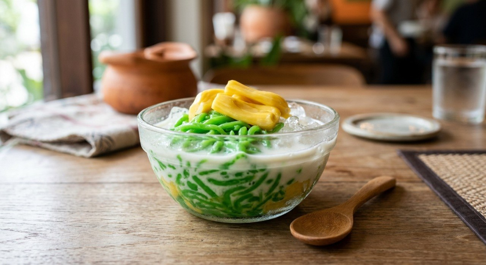

Green pandan rice-flour strands pressed into ice water and served in sweet coconut milk — the dessert Thailand reaches for when the temperature climbs.

ลอดช่อง means "passing through a channel" — the name is the tool. A three-flour batter (rice, tapioca and mung bean, per the Wongnai recipe) is cooked until gluey, then pressed through a multi-holed press straight into ice-cold water, where the strands set into soft green noodles. The Wongnai source's tip is the shop trick: keep the water swirling as the strands fall, so they never touch long enough to stick.
The green is pandan water, and the strand's bite comes from the น้ำปูนใส, clear lime water in the batter — the Kapook tip credits it with keeping the noodles firm instead of sloppy. The coconut milk on top is barely cooked: coconut cream, palm sugar and a pinch of salt stirred until dissolved, because boiling it splits the cream.
The sources split the dessert into two styles. The classic is served warm or at room temperature with jackfruit; the Singapore style is thinner, brighter-green strands over shaved ice with salted coconut cream — the Kapook roundup treats both as the same family, and the TrueID Singapore recipe adds the "เส้นไม่อืด" technique so the strands never go soggy.
| Thai | English | Amount |
|---|---|---|
| แป้งข้าวเจ้า | Rice flour | 270 g |
| แป้งมันสำปะหลัง | Tapioca starch | 90 g |
| แป้งถั่วเขียว | Mung bean flour | 60 g |
| น้ำใบเตย | Pandan water | 400 ml |
| น้ำปูนใส | Clear lime water | 1 L |
| ขนุน | Jackfruit | 200 g |
| หัวกะทิ | Coconut cream | 500 ml |
| น้ำตาลปี๊บ | Palm sugar | 500 g |
| เกลือ | Salt | ½ tsp |
Kapook's smoked coconut: 10 pandan leaves and a candle-smoke infusion (เทียนอบ) in the coconut milk. The Singapore style: thinner brighter strands over shaved ice with a saltier coconut cream.
Classic or Singapore. The classic is soft green strands in warm coconut milk with jackfruit; the Singapore style is thinner, brighter strands over shaved ice with a saltier cream. Both are ลอดช่อง.
How sweet. Wongnai's coconut runs 500 g palm sugar to 500 ml cream; Kapook's classic uses 300 g of coconut sugar and adds pandan. The classic is sweeter; the Singapore style leans salty.
Smoked coconut. Kapook infuses the coconut milk with candle smoke (เทียนอบ) — the old sweet-shop perfume. The other sources skip it.
Jackfruit or not. Wongnai's classic carries jackfruit; the Singapore version often takes sweetcorn or nothing. The fruit is optional garnish.
The lime water. Every source includes it in the batter — the disagreement is only how much. It's the firmness of the strand.
This recipe is translated from the following Thai-language sources. Where they disagree, we've said so.
1. Wongnai — "แจกสูตรฟรี ลอดช่อง เมนูของหวานคลายร้อนสไตล์พื้นบ้าน" (the recipe used here) — wongnai.com
2. Kapook — "ลอดช่อง ขนมไทยน้ำกะทิอร่อยสดชื่นรับหน้าร้อน" (classic + lime-water tip + smoked coconut) — cooking.kapook.com
3. Kapook — "2 สูตรลอดช่อง ขนมไทยหอมใบเตย" (classic vs Singapore styles) — cooking.kapook.com
4. TrueID — "สูตรทำ ลอดช่องสิงคโปร์ใบเตย พร้อมเทคนิคทำเส้นไม่อืด" (the Singapore version + no-sog technique) — food.trueid.net